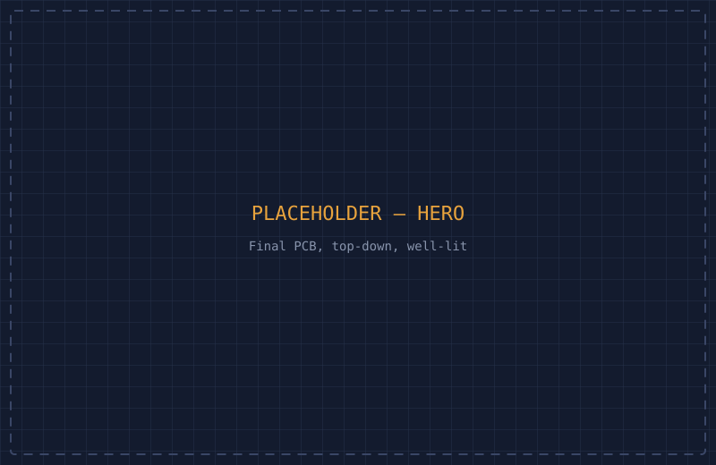
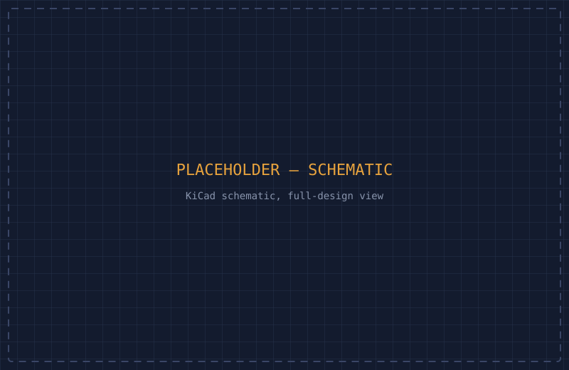
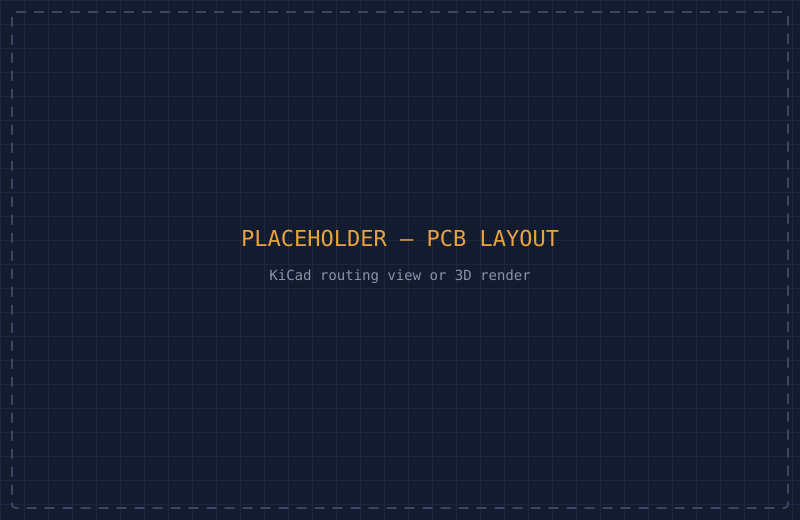
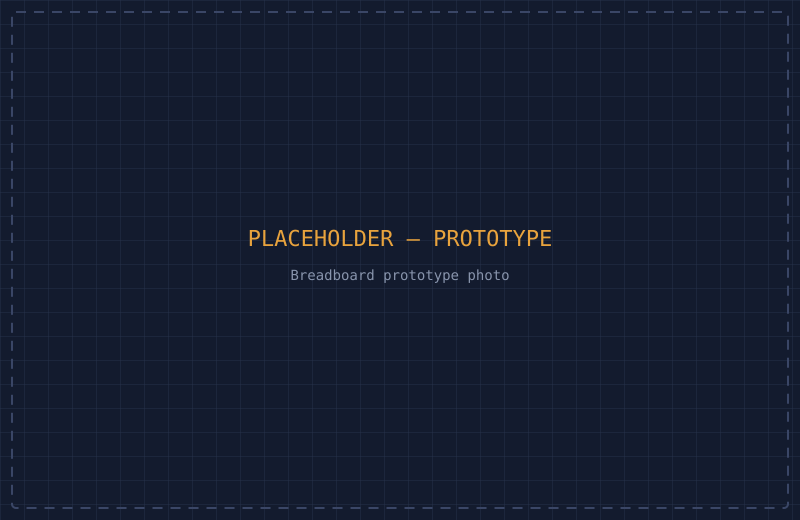
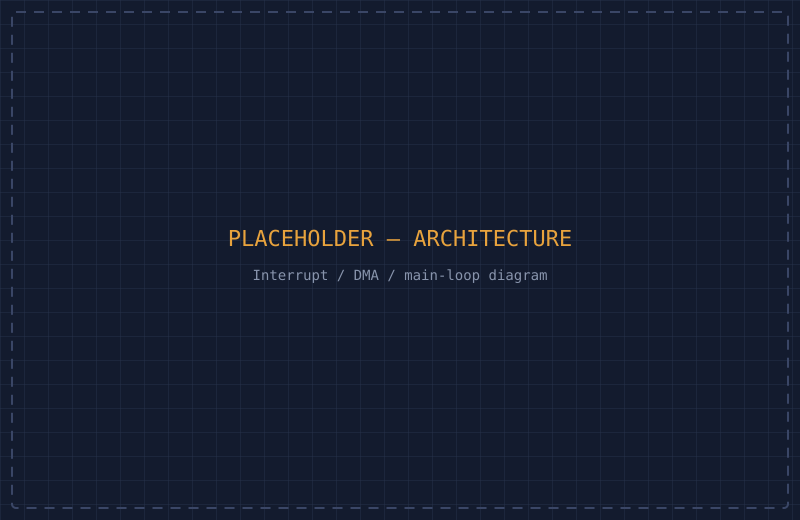
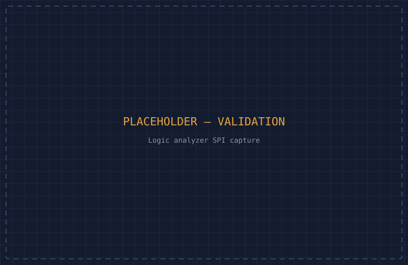
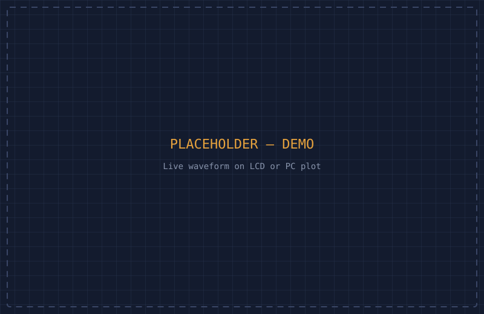

A two-channel, 0–3.3V, 500kHz-bandwidth signal acquisition device, designed from requirements through schematic capture, PCB layout, and a hybrid interrupt/DMA firmware architecture around an STM32.

images/oscilloscope/ with the matching filename, replacing
the placeholder SVG of the same name:
hero.svg → hero.jpg: final PCB, top-down, well-litschematic.svg → schematic.png: full KiCad schematic viewpcb-layout.svg → pcb-layout.png: KiCad routing view or 3D renderbreadboard.svg → breadboard.jpg: breadboard prototype photoarchitecture.svg → architecture.png: interrupt/DMA/main-loop diagramlogic-analyzer.svg → logic-analyzer.png: SPI bus capture screenshotdemo.svg → demo.jpg or .gif: live waveform on LCD or PC plotNot an instrument anyone would actually rely on. Deliberately scoped as an introductory project, but a real one nonetheless: a two-channel oscilloscope that has to sample, display, and stream real signals under real timing constraints. The goal was to go through a full hardware design process, from an abstract idea down to a working PCB, rather than just wiring up a dev board.
I started by breaking the abstract idea of "an oscilloscope" into concrete hardware and firmware requirements: two BNC input channels reading 0–3.3V, a graphic display capable of showing a live channel, a 500kHz sample rate (chosen so the ADC could hit roughly 10 samples per signal period, well past the Nyquist minimum), USB data streaming and logging to a PC, physical buttons for channel and recording control, and a small form factor.
Around those requirements, I selected an STM32 microcontroller with a built-in 12-bit ADC (5 mega-samples/sec, comfortably above the 500kHz target), a SPI graphic LCD, and a USB CDC peripheral for the PC link. From there: schematic capture in KiCad, careful attention to power rails and decoupling capacitors around the MCU and display, and a full BOM sourced from real component datasheets.


Before committing to a PCB, I built and validated the design on a breadboard using a dev board with the same MCU, the same rule I'd apply to any project: verify the wiring and the firmware architecture works before you spend money and time on a board spin.

The firmware architecture is the part I'm most deliberate about. A pure polling loop would miss button presses during a slow display render; a fully interrupt-driven design risks starving the system if any one interrupt handler runs too long. I used a hybrid: DMA handles ADC sampling and USB data transfer without CPU intervention, short interrupt service routines just set event flags (never do heavy work), and the main loop handles user input and display rendering, the two tasks that actually need significant CPU time.

void HAL_GPIO_EXTI_Callback(uint16_t pin) {
// Debounce, then just flag the event, never render
// or do heavy work inside an ISR.
button_events |= EVENT_CHANNEL_1_PRESSED;
}
// main loop
if (button_events & EVENT_CHANNEL_1_PRESSED) {
button_events &= ~EVENT_CHANNEL_1_PRESSED;
toggle_channel(CHANNEL_1);
}
I validated the SPI communication to the LCD against the datasheet timing using a logic analyzer, catching timing and protocol issues before they became "why is my display blank" debugging sessions.

